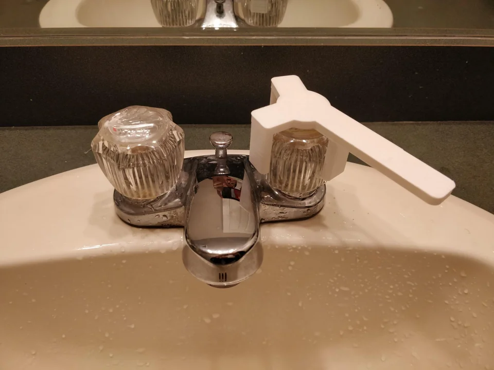
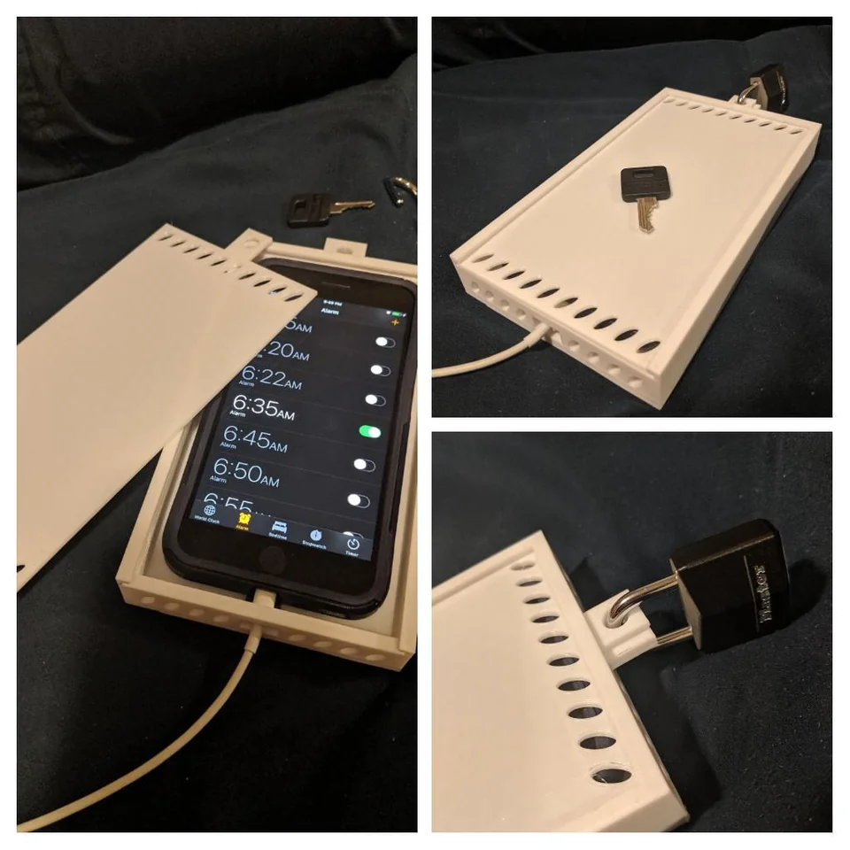
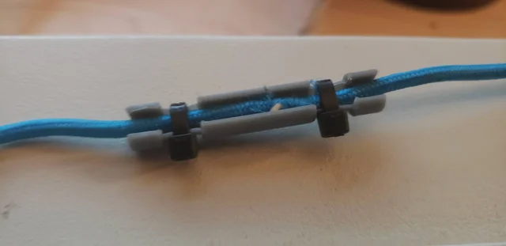
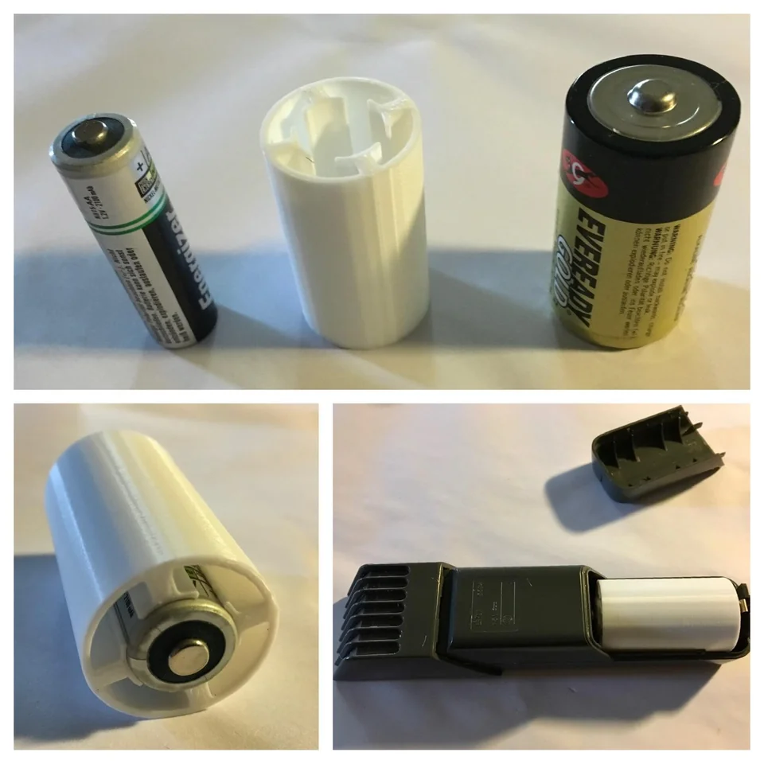
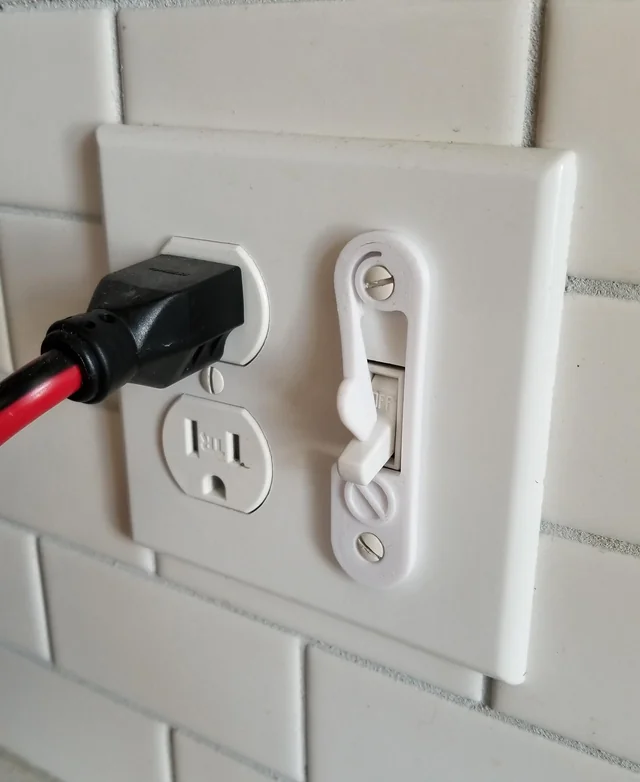
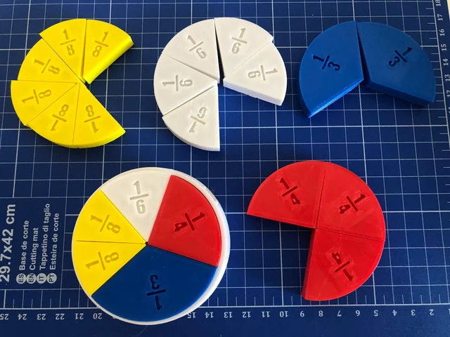
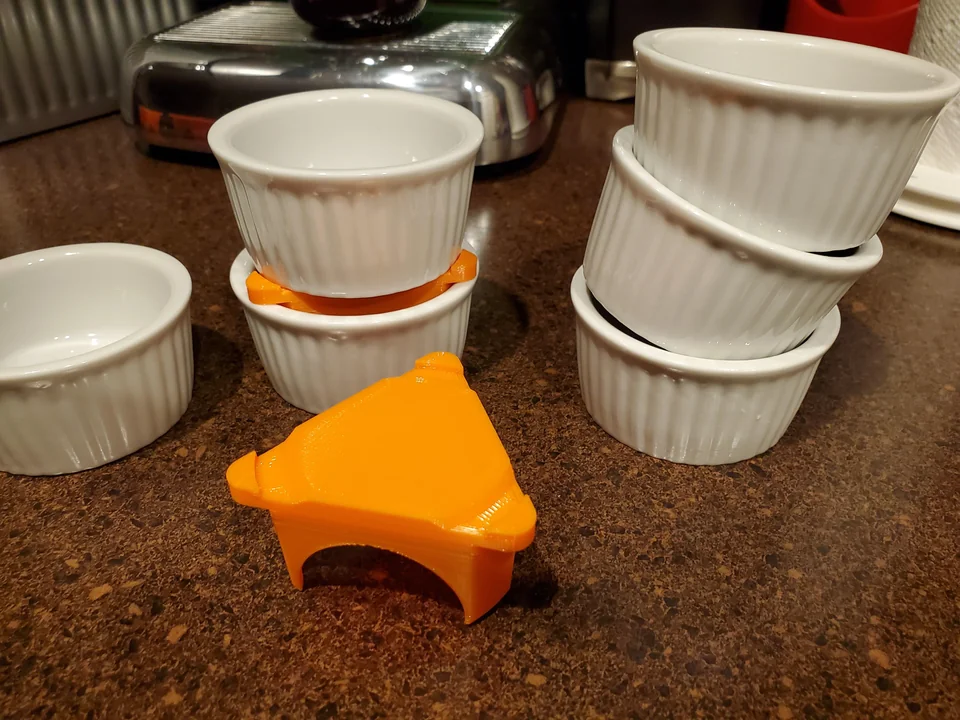

« 3D printed hoodie helper to pull the string back into your
hoodie if the washing machine pulls it out »
[adamdavenport] (7 mai. 2020), Reddit
« I created a phone holder for NYC citibikes »
[Tic-Tor] (5 nov. 2022), Reddit
« Stencils I made for quickly drawing axes for Trigonometry
homework on graph paper »
[utilisateur supprimé] (20 sept. 2019), Reddit
« No more punching the sink, now washing hands in peace ☮️ »
[GodComplex_999] (8 sept. 2022), Reddit
« I designed and made a retractable hardcase for my keys so they
wont scratch anything in my pocket. »
[tonystark29] (28 mars. 2021), Reddit
« Designed a faucet handle so I can use my elbow
instead of my dirty hands »

A Really Shoddy Programmer [ShoddyProgrammer550] (17 mars. 2020), Reddit
« I design this custom piece to store the disk lock on my bike. »
[mtys123] (18 févr. 2021), Reddit
« Lockbox for my morning alarm. I put the key in my freezer every
night. Changed my mornings! »

[Snackob] (12 oct. 2019), Reddit
« 3D printed casing for HDMI connector. Original was unreasonable big, so i made smaller one »
[Vojtech_Bucek_Brno] (20 févr. 2020), Reddit
« Compliant door stopper »
[Zoorger] (6 janv. 2023), Reddit
« Peep Hole Cover »
[fatalerror501] (8 sept. 2019), Reddit
« 9 minute print: A splint for my dying headphone cable
that must be kept perfectly straight. »

[Squid_Tamer] (5 oct. 2020), Reddit
« My ancient beard trimmer seems to suck the life out of C size batteries.
I made an adaptor so I can use AA size rechargeables. »

[RumbleTum9] (23 sept. 2019), Reddit
« No More Accidentally Flipping The Switch On! »

[DotScott1] (20 janv. 2020), Reddit
« Cable holder »
[vietquocnguyen] (16 déc. 2020), Reddit
« Lenovo wanted an exorbitant amount of money for one of these
caddies so I printed one instead. »
 Demetry [demilavoto] (28 sept. 2021), Reddit
Demetry [demilavoto] (28 sept. 2021), Reddit
« Golf ball picker and dispenser, uses pvc tube, inspiration
credit goes to u/saybobby »
[basket-o-sass] (14 déc. 2020), Reddit
« Fractions learning purpose, is it still functional? »

dlam [lamashevskyi] (20 mai. 2020), Reddit
« "Anti-Gravity" Aquarium Water Column Mount from Old Tumbler »
[canadaornot] (17 juin. 2020), Reddit
« Mailbox flag ...disappeared?! When life gives you lemons,
make a new mailbox flag so you can send them back. »
[keith204] (18 nov. 2020), Reddit
« I designed this Mini Ramekin stacker - so they stop falling
over in the cupboard »

[alaorath] (26 mars. 2020), Reddit
« Printed this to drain the cup back back into the jug of
laundry detergent. Works like a charm! »
[pickled_bologna] (14 janv. 2023), Reddit
« Had to tighten three screws on a chair that were difficult to reach.
This worked great! »
[Abtarag] (5 oct. 2019), Reddit
« Button reducer for TV remote for my grandparents. »
 Sabaath [Visual-Zucchini-9988] (16 juil. 2021), Reddit
Sabaath [Visual-Zucchini-9988] (16 juil. 2021), Reddit
« FoodSaver adapter for regular re-sealable bags »
[alaorath] (28 oct. 2020), Reddit